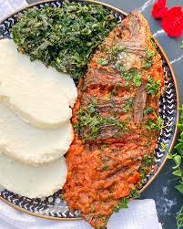

Home
Ugali and Fish Recipe

Ugali and fish is a traditional dish from the coastal region of Kenya. It is a delicious combination of maize flour and fish, often served with vegetables or stew.
This recipe is easy to follow and can be made in under an hour. It is a great option for lunch or dinner.
Ugali and fish is not only tasty but also nutritious, making it a perfect meal for the whole family. Enjoy this delightful dish with your favorite sides!
Cooking Time
Preparation Time: 10 minutes
Cooking Time: 80 minutes
Total Time: 90 minutes
Servings
This recipe serves 2 people.
Difficulty Level
Easy
Ingredients
- 2 cups maize flour
- 1 medium tilapia size Fish
- 1 bunch of spinach
- 1 table spoon of salt
- Cooking oil
- 1 large bulb onion
- 2 tomatoes
- 1 bunch of corriander
- 1 cube fish boulion
Preparation
- Chop spinnach, onions, tomatoes and corriander. Slice the fish in half.
- In a large pan over medium heat, add oil enough to deep fry the fish. Once the oil is hot, deep fry the fish untill its golden brown and crispy. Set aside
- In a pot over medium heat, add 5 tablespoons of oil, 3/4 of the chopped onions. Cook until golden brown.
- Add all the chopped tomatoes. Cook until they become soft.
- Add fish boulion in 1 cup of water. Pour it ovet the tomatoes and let it cook for 5 mins
- Add the two pieces of fish. Add salt to taste. Let it cook untill a small amount of the broth is visible.
- Add the chopped corriander for garnishing. Set aside
- In a pan over medium heat. Add 3 tablespoons of oil and the remaining onions.
- Cook until golden brown.
- Add the chopped spinnach and cook for 5 min stirring continously. Add salt to taste. Set aside
- In a pot over medium heat, add 1 and 1/2 cups of water.
- Once the water boils, add the flour in portions, kneading with a wooden spoon untill a medium-hard dough is formed.
- At this point, knead until no dry patches of flour are visible. Shape the dough in to a circular shape.
- Cover the pot and let it cook for 5 mins. Its ready when it gives off a sweat baked smell. Set aside
- Serve and enjoy